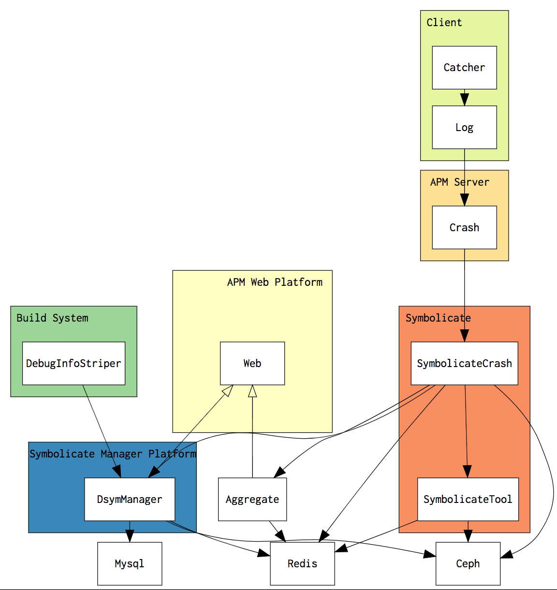

APM Crash系统
整体架构

客户端
- Crash/OOM/ANR 抓取
- 上报日志格式
Crash/OOM/卡顿 抓取
这块技术有很多的开源方案，
Crash抓取有 KSCrash PLCrash…
OOM 可以参考腾讯的OOMDetector自己优化一下
ANR 可以参考很多方案，这里就不细说了
日志上报格式
上报的日志我认为最好兼容苹果的 symbolicatecrash 工具, 这就需要我们去理解 symbolicate 工作的原理，随后我们可以加上自己的内容，方便自己进行更多的功能扩展。
symbolicatecrash 的原理
- 解析头部信息是否符合规范
- 解析堆栈信息，符号表 信息
- 在文件中查找符号表的路径
- 根据堆栈信息去匹配相应符号表
- 使用atosl工具进行符号化
- 文本替换成符号化后的日志
服务端
- 符号化和解析服务
- 堆栈聚合服务
- 符号文件管理系统
符号化和解析服务
我们可以把这块看成两个部分，1符号化，2解析服务
符号化
符号化就是把地址翻译成对应的符号信息，比如说 把堆栈调用的地址 翻译成 调用方法的名称。
苹果给我们在 MacOS 下提供了 atosl 工具，可以帮助我们完成这部分工作。但是这个工具仅仅可以在MacOS 下工作，对于大规模的用户日志来说，依赖于MacOS系统不容易部署维护，费用也十分昂贵，因此我们需要在Linux下实现一个相等功能的工具。
解析服务
由于我们的日志是文本格式，我们需要提取其中的信息才可以将其用作符号化工具的输入，可以通过正则匹配的方式去处理这些信息。
工具实现
- Linux 平台下可用的符号化工具
Linux 平台下可用的符号化工具
总体来说，iOS符号化我们需要了解两部分知识， 1 Dwarf调试格式 2 Macho文件格式
Dwarf调试格式
我们经常可以接触到的dsym文件是一个目录，其中包含了一个格式为Dwarf的调试信息文件。
调试信息是在编译器生成机器码的时候一起产生的。它代表着可执行程序和源代码之间的关系。这个信息以预定义的格式进行编码，并同机器码一起存储。
在DWARF里基本的描述项是调试信息项（DebuggingInformation Entry——DIE）。一个DIE有一个标签，它指明了这个DIE描述什么及一个填入了细节并进一步描述该项的属性列表。一个DIE（除了最顶层的）被一个父DIE包含（或者说拥有），并可能有兄弟DIE或子DIE。
通过提取Dwarf文件中的调试信息和对应的堆栈进行匹配，就可以解出一些符号信息，包含调用行号文件名称等信息。
需要注意的一些知识点
DW_AT_abstract_origin， DW_AT_specification
A debugging information entry that represents a declaration that
completes another (earlier) non-defining declaration may have a
DW_AT_specification attribute whose value is a reference to the
debugging information entry representing the non-defining declaration.
A debugging information entry with a DW_AT_specification attribute
does not need to duplicate information provided by the debugging
information entry referenced by that specification attribute.
A DW_TAG_subprogram entry can contain a reference to a DW_AT_abstract_origin entry instead of > duplicating the information.
这意味着 我们需要针对 DW_AT_abstract_origin 进行特别处理
Macho 文件格式
上文中提到的符号文件，是Macho文件格式的。
Macho文件中包含 SymbolTable 可以提取出符号的名称，对于系统库和外部符号（例如你的静态库中的符号），我们可以从SymbolTable中提取符号名称。
堆栈聚合服务
因为导致用户Crash的问题大多是相同的，导致用户Crash的堆栈存在许多相似和相等的情况，我们需要把同一类堆栈聚合在一起，协助平台用户高效的解决问题。
系列文章
接下来我会逐渐介绍这整套系统的设计和相关技术实现。
install_url to use ShareThis. Please set it in _config.yml.